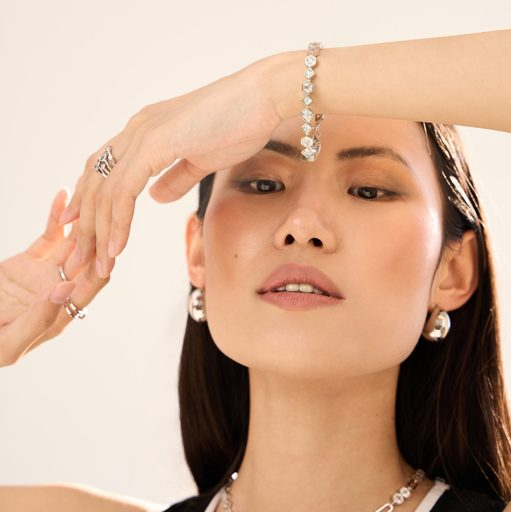
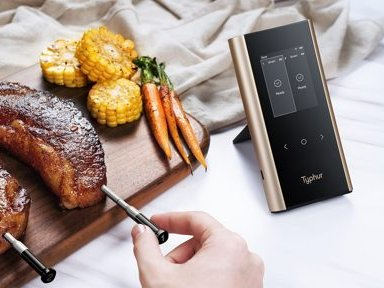

#2
Halé Dome Hoops
Glossy one-inch dome hoops in 18k gold, rhodium or rose gold plating, made to be light enough for every day.
Check it outEvery gadget from our Shorts and Reels, newest first. Saw "find #N" in a video? Here it is.

Glossy one-inch dome hoops in 18k gold, rhodium or rose gold plating, made to be light enough for every day.
Check it out
Two wireless probes with six sensors each, so you know exactly when the meat is done.
Check it out